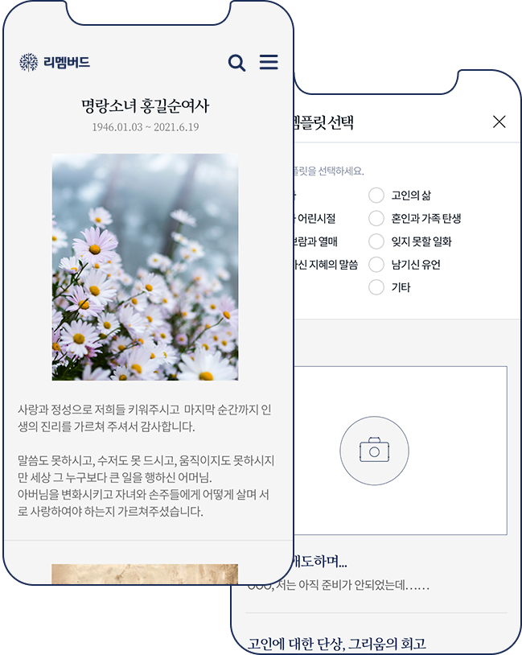

조문보는 부고와 함께 고인의 삶과 정신적 유산을 조문객에게 알리며 추모하는 글을 담은 문서로 유족과 지인들에게 기억 되는 고인의 삶에 관한 큰 줄기가 압축적으로 정리된 형식의 글입니다. 고인의 삶의 상징어, 의미, 약력, 유언, 어록, 추모 글과 유족 인사말 등이 담깁니다.
장례 이후에는 고인의 삶을 간직하고 추억하며 남기신 지혜의 메시지를 통해 가족구성원들이 지속적으로 서로 연결될 수 있는 소중한 공간이 될 수 있습니다.
※샘플 대로 따라하면 보다 쉽게 조문보를 작성하실 수 있습니다.
조문보 프리미엄 서비스는 조문보를 직접 작성하는데 어려움이 있거나 고인의 삶을 보다 깊이 있게, 의미 있게 담아내고자 할 경우, 에버영피플의 조문보 웹진 작가의 도움을 받아 제작 의뢰하는 서비스 입니다.
조문보 전문 웹진 작가가 유족과 인터뷰를 통해 고인의 삶을 관통하는 핵심 주제어를 중심으로 글로 정리하고 사진들을 덧붙여 압축한 고품격 조문보입니다.
작가는 고인의 삶의 의미와 지혜 등을 추출하기 위한 구조화된 질문지를 사용한 유족과의 인터뷰 과정에서 유족의 마음에 남아있는 기억들을 하나 하나 풀어냅니다. 이 때 슬픔 속에 고인의 삶에 대해 미처 깊이 생각해보지 못했던 유족은 고인이 남기신 유훈을 어느 순간 새롭게 깨닫게 됩니다.
| 가격 | 380,000원 |
|---|---|
| 조문보 구성 | 5개의 대표주제 |
| 사진편집 | 에버영 조분보 전문 웹진작가 |
| 페이지 레이아웃 디자인 | |
| 구성 및 내용 기획 편집, 윤문, 교정 | |
| 작가 인터뷰(30분) | |
| 검수 | |
| 웹진 제작/등록 | |
| 내용 업데이트 | |
| 제작 및 감수 | |
| 고인의 삶 고인의 삶에 대한 동영상 제작 | |
| 의뢰 이후 제작 기간 | 약식 버전 24시간 이내 |
| 제작 기한-납품 기간 | 최종 버전 한 달 이내 (※작가와 협의 가능) |
① 홈페이지에서 간단한 개인정보와 내용 등 신청서 작성 후 '상담 신청'
② SNS로 알림 수신 후 고객과 상담한 후 기록
① 회원가입 & 계좌 입금 완료(무통장)
② 조문보 작가 배정 & 기초상담내용 공유
① 조문보 작가와의 인터뷰 진행
② 인터뷰를 통해 필요한 글감과 사진, 동영상 등 자료 준비하여 작가에게 보내기
① 의례 후 24시간내 조문보 약식 버전 수신
② 내용 확인 후 수정 및 보완 요청 (※2회 수정 가능)
③ 한달 이내 최종 조문보 수신 (※작가와 협의 가능, 2회 수정 가능)
(필수) 개인정보 수집·이용에 대한 안내
(주)엠서클은 이용자 문의를 처리하기 위해 다음과 같이 개인정보를 수집 및 이용하며, 이용자의 개인정보를 안전하게 취급하는데 최선을 다하고 있습니다.
| 수집항목 | 이용목적 | 보유기간 |
|---|---|---|
| 이름, 휴대폰번호, 이메일주소, 고인명 | 고객문의 및 상담요청에 대한 회신 상담을 위한 서비스 이용기록 조회 | 3년간 보관 후, 지체없이 파기 |